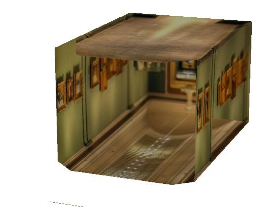
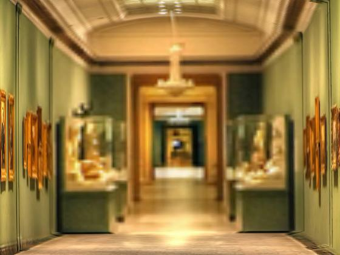
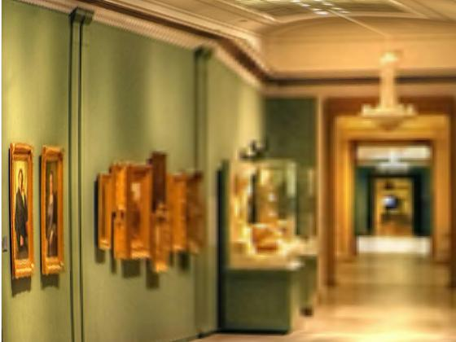
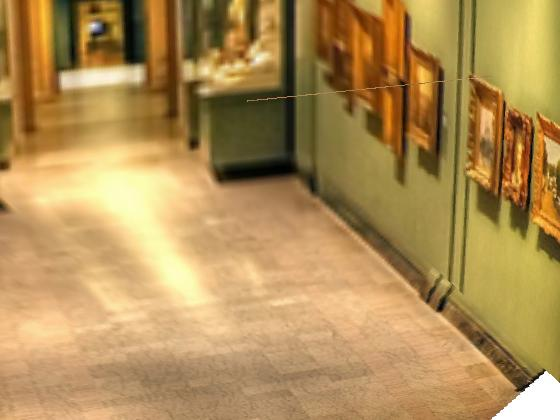
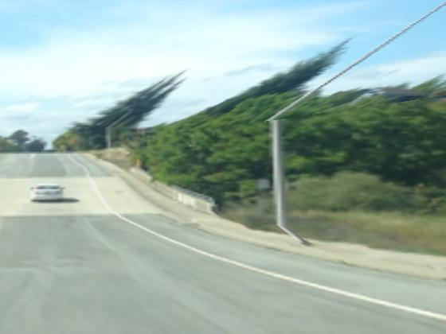
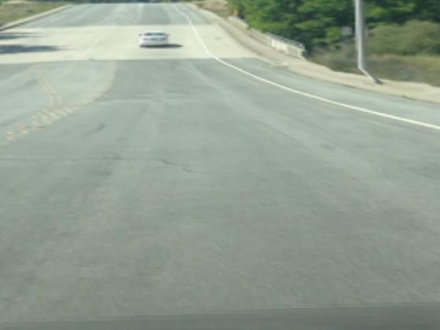
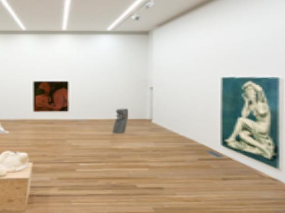
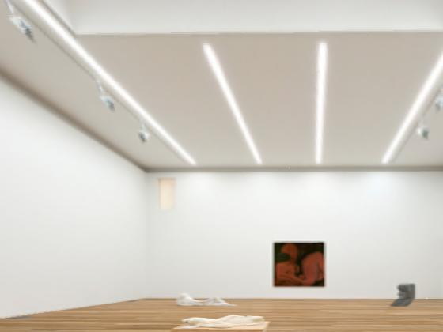
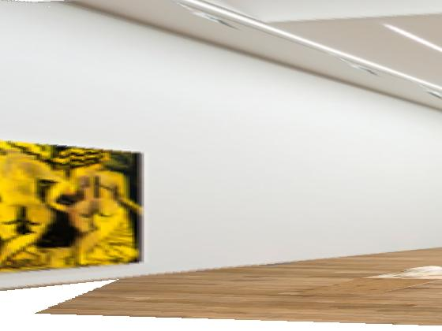

Tour in the picture
Basically we calculate the 3d coordinates of each of the five planes using W, H, D where W,D = width and height of the input image and D is calculated by focal length, W,D and the size of the back plane image. Then we homograph each plane and texture them into the 3d model.
Results
Europe Gallery
Original:

Model:
New views
  Road
Original:

New views
 Small Gallery
Original:

New views
  The source image of the small gallery example is from http://www.renniecollection.org/exhibitions/bessonehouseago/index.php
The source image of the europe gallery example is from https://www.flickr.com/photos/usnao95/5271317753/